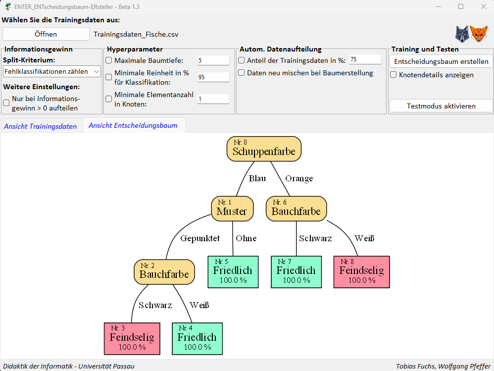

ENTscheidungsbaum-ERsteller ENTER
Für die didaktische Simulation des Entscheidungsbaum-Algorithmus wurde der Entscheidungsbaum-Ersteller ENTER entwickelt. Die Software kann als Hilfsmittel bei der Umsetzung des Themas Entscheidungsbaum des LehrplanPLUS-Kapitels 11.4 Künstliche Intelligenz des bayerischen Lehrplans dienen. Sie eignet sich sowohl um die Trainings- und Testphase des Algorithmus maschinellen Lernens durchzuführen, als auch um den Einfluss von Trainingsdaten und Parametern auf die Zuverlässigkeit der Ergebnisse des Entscheidungsbaum-Algorithmus zu untersuchen.
Was kann der ENTER?
Der ENTER bietet die Möglichkeit die Trainingsphase und die Testphase des Entscheidungsbaum-Algorithmus durchzuführen und die Ergebnisse graphisch zu visualisieren. Der Entscheidungsbaum-Ersteller ermöglicht außerdem die genauere Untersuchung eines erstellten Entscheidungsbaums, indem man sich die verwendeten (Teil-) Datensätze in den einzelnen Knoten, das ggf. berechnete beste Attribut sowie die in den Knoten berechneten Informationsgewinne anzeigen lassen kann.
- Trainingsphase:
Im Rahmen der Trainingsphase kann ein Entscheidungsbaum unter Verwendung verschiedener Split-Kriterien (u.a. Fehlklassifikationen zählen, Gini-Impurity,...) unter Einbezug unterschiedlicher Hyperparameter (u.a. maximale Baumtiefe, minimale Reinheit,...) erstellt und graphisch dargestellt werden.
- Testphase:
Im Anschluss daran kann im Rahmen der Testphase die Vorhersagequalität des erstellten Entschscheidungsbaums bewertet werden. Dafür können Testdaten unter Verwendung des Baums ausgewertet werden und die berechneten Ergebnisse mit dem erwarteten Ergebnissen verglichen werden. Die Ergebnisse lassen sich übersichtlich in Form einer Konfusionsmatrix einsehen. Des Weiteren kann das Gütemaß Genauigkeit angezeigt werden, mit welchem die Vorhersagequalität des Entscheidungsbaums bewertet werden kann.
- Automatische Datenaufteilung:
Der ENTER bietet die Möglichkeit einen geladenen Datensatz automatisch in Trainings- und Testdaten aufzuteilen, was es vereinfacht den Einfluss verschiedener Trainingsdaten auf die Modellerstellung zu untersuchen.
Für die Verwendung des ENTERs können Sie entweder von uns vorbereitete Datensätze verwenden oder aber auch eigene Datensätze in den ENTER laden. Diese müssen in Form von .csv-Dateien vorliegen. Genauere Informationen hierzu finden Sie im Bereich Anleitungen oder im Handbuch zum ENTER im Downloadbereich.
Versionshinweise: Neu im ENTER Beta 1.3
- Anzeige der Elementanzahl der geladenen Datensätze(Trainings- un Testdaten)
- Verkürzung der Anzeige des Dateipfads eines geladenen Datensatzes auf dem Dateinamen
- Überarbeitung der GUI in Bezug auf Benennungen und Layout.
- Behebung eines Bugs, welcher in manchen Fällen dazu geführt hat, dass in einem Blatt nicht das mehrheitliche Label angezeigt wurde.
- Behebung eines Scrollbar-Bugs im Testmodus
- Umbenennung der Startdatei zu Starte_ENTER.py
- Weitere kleinere Bugfixes und interne Verbesserungen